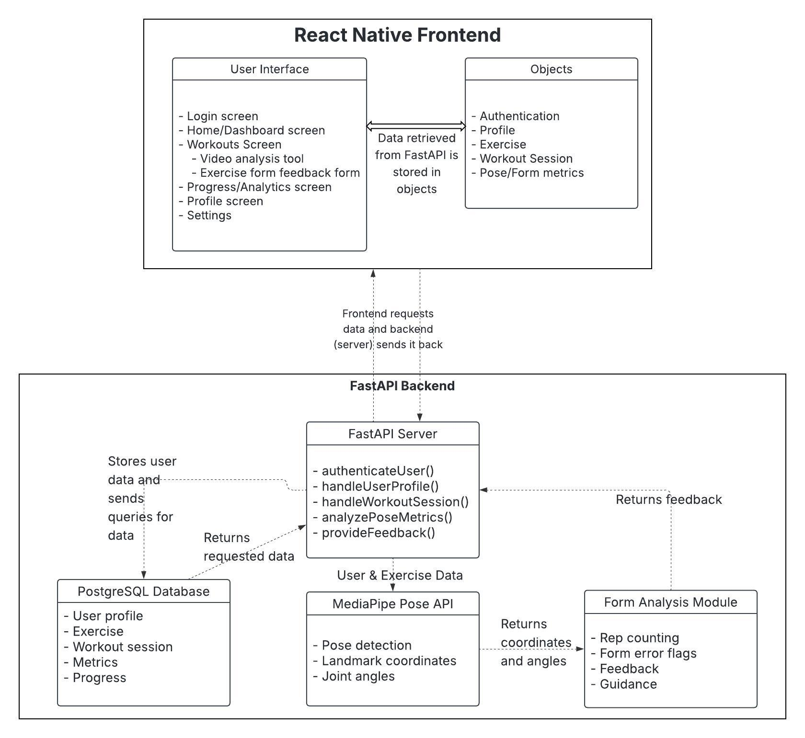
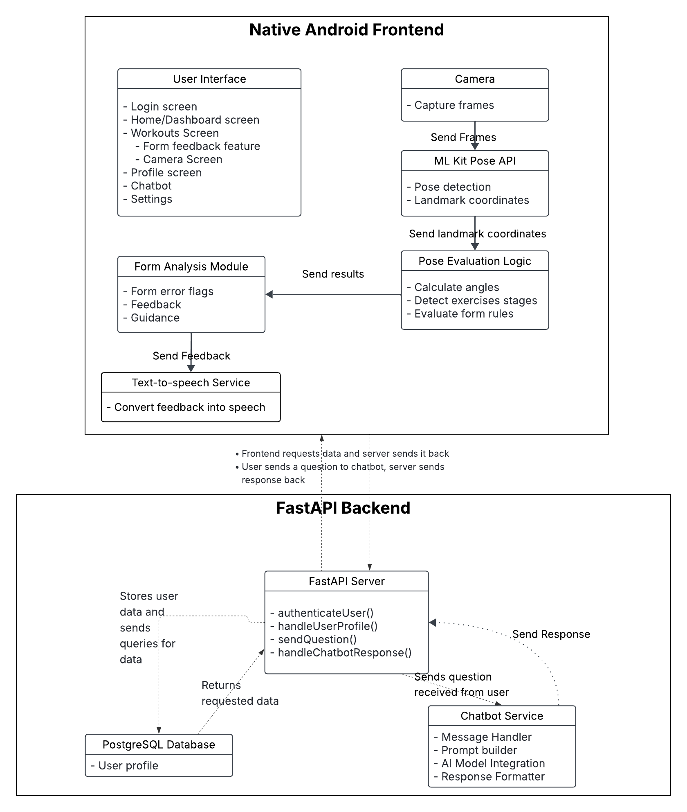
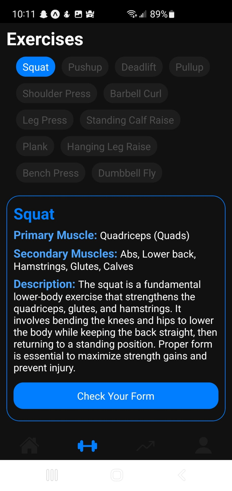
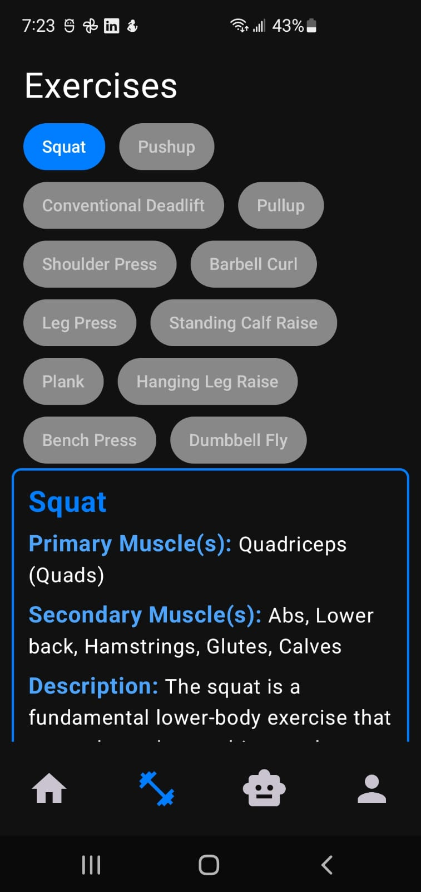

At first, I was planning to create a mobile app with React Native and the MediaPipe Pose API that had a form-feedback feature and which gave personalized workouts to the user. The app was going to have a React Native frontend and a FastAPI backend. The frontend was solely going to be responsible for the user interface, while the backend was going to handle the real-time pose feedback logic and the data storage.

After doing some research and learning more about the technologies I was planning to use, I realized that using React Native and the MediaPipe Pose API might not be the best choice for my project. I decided to switch to using Kotlin for the frontend and the ML Kit Pose API for the pose detection and form feedback logic. I changed from having the form-feedback logic in the backend to having it in the frontend because I realized that it would be more efficient and would provide a better user experience. The backend is now responsible for data storage and retrieval, as well as handling the chatbot feature.

When I first started working on the user interface, I was using React Native and I had a very basic design in mind. I wanted to keep it simple and clean, with a focus on functionality rather than aesthetics. The UI was going to have a bottom navigation bar with four tabs: Home, Workouts, Progress and Profile. The Home tab was going to be the main screen where the user would land once they logged in. The Workouts tab was going to be where the user could access the real-time form feedback feature and also view different workouts. The Progress tab was going to be where the user could track their progress and see their workout history. The Profile tab was going to be where the user could view and edit their profile information.

After switching to Kotlin for the frontend, I had to redesign the user interface to fit the new technology. They look relatively the same in terms of design, but the main difference is that I replaced the progress tab with a chatbot tab. The chatbot tab is where the user can access the chatbot feature and ask it questions about different weightlifting topics.
